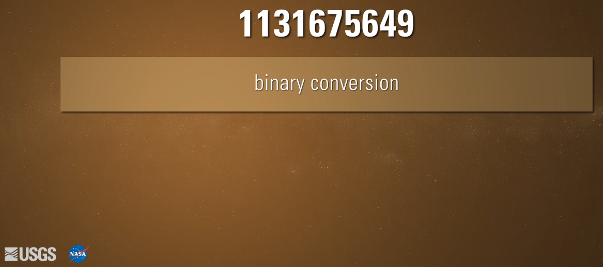
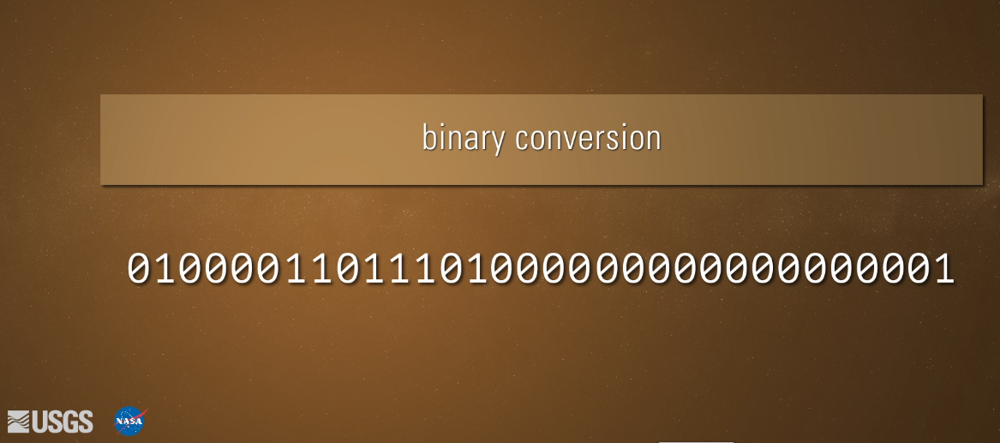
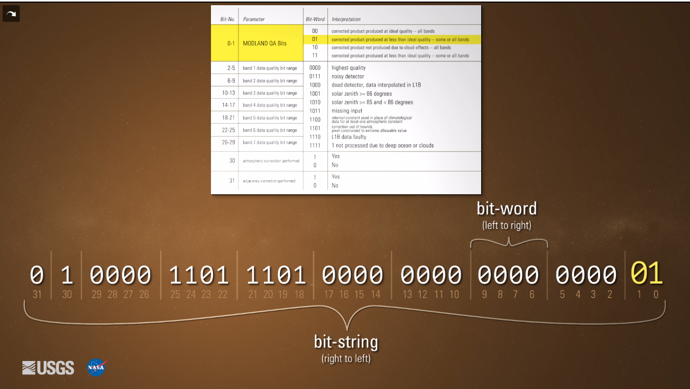
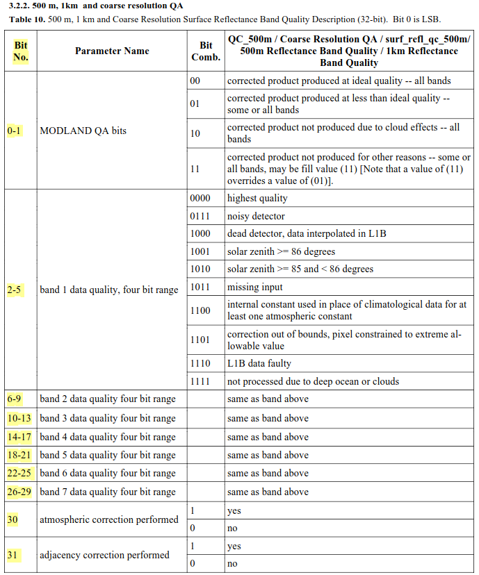
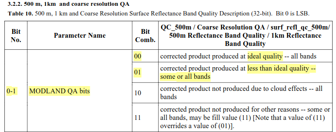

![]()
What are we going to do?
So, I was working with some MODIS Surfance Reflectance product images from which I needed to calculate 4 vegetation indices to estimate Gross Primary Production. Apart from being careful with selecting images without snow or clouds I knew that every pixel comes with QA information useful to decide if including or not some of the pixels. Nonetheless, I was confused on how to perform such task on the many pixels that I had, and furthermore how to deal with the bits transformation into categories that I could understand and then filter in R according to their quality.
Luckily there are sources of documentation that I could go through to understand and get to work in my project. There was one blog post by Steve Mosher from where I understood better what needed to be done. So I wrote down everything it worked for me and finally put it here.
MODIS and the bit strings
The MODIS reference manual …
Variables with bit strings
There are 4 variables in the dataset with a bitmask that needs to be converted:
state_1kmgflagsqc_500mq_scan
According to the technical documentation, this variables contain information about ….
Let’s read the dataset to explore what do we have originally in here
How many unique values do I have per each of the quality variables?
$state_1km
[1] 1033 40969 8392 1034 40970 5384 1289 1801 45068 1545 8397 8398
[13] 1032 8396 8393 5128 40973 40974 45064 8394 32781 206 36872 32778
[25] 32777 5640 36876 32776 45066 8334 200 138 136 8 72 8264
[37] 1544 8332 1802 1288 8328 1546 8268 8330 8205 76 204 141
[49] 140 8204 40972 8266 137 1290 74 1800 32780 5896 40968 205
[61] 202 201 8329 8270 5385 5898 5642
$gflags
[1] 0
$qc_500m
[1] 1073741824 1073968181 1073954817 1075838976 1073968129 1073755137
[7] 1073755189 1075852341 1076065281 1946383413 1073969013 1073954869
[13] 1075852289 1076065333 1076051969 1075576832 1075590145 1075803189
$q_scan
[1] 14 8 9 2 0 6 15 3 13 11 12 1 7 10 5 4So, in our dataset, state_1km has 67 distinct values, gflags variable has 1 so we are not going to use this one, qc_500m has 18 distinct values, and q_scan variable has 16 unique values. We need to convert this integers into bits and then, make sense of those bits. This is going to be our first part of the exploration.
Using bits in R
So, how do we accomplish this in R? Fortunately, we have some functions in base R specifically designed to handle this type of information. In our case, the function intToBits() will be particularly helpful. For instance, let’s consider one of the values from the q_scan variable: the integer 14.
[1] 00 01 01 01 00 00 00 00 00 00 00 00 00 00 00 00 00 00 00 00 00 00 00 00 00
[26] 00 00 00 00 00 00 00That’s quite a lengthy bit string! It contains more information than necessary. Therefore, we need to shorten this bit string and convert it into an integer.
- Remember that this has to be read from left to right. So the first bit is 0.
- The 8 bits are numbered from 0 to 7 (as opposed to the R default).
- Each bit represents a power of 2.
- We need to reverse this bit string
Binary conversion
Every pixel in the satellite images contains an integer value that must be converted to a bit binary value for interpretation. At first, it seems complicated but the documentation will help us here. For any sensor, we would need to check the documentation in order to perform any binary conversion and interpretation.
There is also a good video from the United States Geological Survey (USGS) that explains the process for the interpretation of the binary conversion with the documentation. From minute 2:34 of this USGS video it shows the process of the binary conversion.
How can I apply the idea to our MODIS data?
We’ve covered the basics of understanding bits, binary conversion, and interpretation. But how do we put this knowledge to use with our dataset? This is where Steve Mosher’s blog post comes in handy.
Let’s start by taking a single value from the qc_500m variable in our dataset: 1075803189. Here are the steps we’ll follow:
- Utilize the
intToBits()function to obtain the binary representation. - Shorten the lengthy bit string to only include the necessary bits.
- Reverse the order of the bits.
[1] 1 0 1 0 1 1 0 0 0 0 1 0 1 1 1 0 1 1 1 1 1 0 0 0 0 0 0 0 0 0 1 0 [1] 0 1 0 0 0 0 0 0 0 0 0 1 1 1 1 1 0 1 1 1 0 1 0 0 0 0 1 1 0 1 0 1Ok! It looks like it works. But I’m not sure, so let’s do the same process but using the example from the USGS video.
Process validation
In the USGS video explanation, they show the binary conversion process with an example. I’m going to use the same integer value 1131675649 to validate if our code steps work as expected.

The bit string obtained from the binary conversion should be:

That bit string should be matched with the categories assigned and described in the documentation:

# Using the example value from video
binary_conversion <- as.integer(intToBits(1131675649)[1:32])
bit_string <- binary_conversion[32:1]
# This one is the result of the binary transformation from the video
validation <- c(0,1,0,0,0,0,1,1,0,1,1,1,0,1,0,0,0,0,0,0,0,0,0,0,0,0,0,0,0,0,0,1)
# Check if object is the same as the one written by hand
stopifnot(bit_string == validation)The steps does match the final result. Next, I need to apply the same logical conditions to my data.
Code to apply the bit string conversion to the variables
Now that I know which steps are needed to do the conversion, I need to develop the code further to apply it to each of the variables with a bit mask. On this first try, I will do it with the variable qc_500m.
For this variable, I’m going to create a dataset with the variable qc_ints that contains the 18 unique integer values from the qc_500m variable plus one more observation from USGS video example to use it as a test validation. Then I’m going to add 32 more variables for each of the bits that we will obtain from the binary conversion process.
## Create column with unique values and add one validation (from the video)
qc_data <- data.frame(qc_ints = c(unique(reflectance_500$qc_500m), 1131675649))
## Create empty data frame. This case is 32 given that the variable
## `qc_500m` have 32 bits
for (i in c(31:0)) {
qc_data[, paste0("bit_", i)] <- NA
}Here is how the data frame looks like:
So far, we have a dataframe with 33 variables (one with the original integers values and 32 more to fill with the bit strings) and 19 observations. Now I can loop through each of the bits variables filling them with the values from the binary conversion result from the original integers
# Loop for obtaining bit string from unique values in the variable
z <- 1
for (i in qc_data$qc_ints) {
# print(i)
transformed <- as.integer(intToBits(i)[1:32])
qc_data[z, 2:33] <- transformed[32:1]
z <- z + 1
}
# Check the data frame
paged_table(qc_data)Every bit variable is filled with 0's or 1's. Looks good, but I want to validate with the USGS example observation we added at the beginning if I’m obtaining the correct bit strings:
Now we know that the code is working and we can perform the binary conversion successfully, we can continue with the matching of categorization of the quality according to the documentation.
Categories for each of the bit strings
Continuing with the variable qc_500m from which I have already the bit strings, I can follow the MODIS documentation to add the categories for each combination of bits.
This steps can be done in two different (but similar) ways: using conditionals for each of the bits, or joining the variables with the specific bits.
First possible solution
This one will take the bits separately and use the boolean & to categorize the information contained in the bit string:
qc_data |>
mutate(modland_qa = case_when(
bit_1 == 0 & bit_0 == 0 ~ "ideal quality - all bands",
bit_1 == 0 & bit_0 == 1 ~ "less than ideal quality - some or all bands",
bit_1 == 1 & bit_0 == 0 ~ "product not produced due to cloud effects",
bit_1 == 1 & bit_0 == 1 ~ "product not produced for other reasons",
TRUE ~ "No info, please validate bit conversion"
)) |>
select(qc_ints, bit_1, bit_0, modland_qa) |>
paged_table()Second possible solution
For this one, I will join the bits and then categorize each one accordingly:
# Second possible solution
qc_data |>
unite(col = "modland", c("bit_1", "bit_0"), sep = "") |>
mutate(modland_qa = case_when(
modland == "00" ~ "ideal quality - all bands",
modland == "01" ~ "less than ideal quality - some or all bands",
modland == "10" ~ "product not produced due to cloud effects",
modland == "11" ~ "product not produced for other reasons",
TRUE ~ "No info, please validate bit conversion"
)) |>
select(qc_ints, modland, modland_qa) |>
paged_table()Considering that I’ll need to write out each condition to categorize them according to the documentation, I believe it would be more manageable and readable to follow the second solution. For each series of bits, I’ll merge them as a single column and categorize them.
qc_500m complete bit string categories
The following code chunk encompasses all the necessary steps to incorporate all the categories specified in the MODIS documentation. Initially, it involves merging the required bits into columns and then generating the categorization as described in the documentation. The outcome of this process will be a data frame containing the categories for the original integer values within our variable
From the documentation, we have which bit strings should be considered together to classify the values into categories. Based on those bit positions, we are going to unite the columns to obtain the bit combination. For example, for the Parameter Name MODLAND QA bits, we have to take the bit in position 0 and the bit position 1, which can have 4 different combinations: 00, 01, 10, and 11. Each of those 4 combinations will be categorized into their respective categories.

qc_500_description <- qc_data |>
unite(col = "modland", c("bit_1", "bit_0"), sep = "") |>
unite(col = "band_1",
c("bit_5", "bit_4", "bit_3", "bit_2"), sep = "") |>
unite(col = "band_2",
c("bit_9", "bit_8", "bit_7", "bit_6"), sep = "") |>
unite(col = "band_3",
c("bit_13", "bit_12", "bit_11", "bit_10"), sep = "") |>
unite(col = "band_4",
c("bit_17", "bit_16", "bit_15", "bit_14"), sep = "") |>
unite(col = "band_5",
c("bit_21", "bit_20", "bit_19", "bit_18"), sep = "") |>
unite(col = "band_6",
c("bit_25", "bit_24", "bit_23", "bit_22"), sep = "") |>
unite(col = "band_7",
c("bit_29", "bit_28", "bit_27", "bit_26"), sep = "") |>
mutate(modland_qa = case_when(
modland == "00" ~ "ideal quality - all bands",
modland == "01" ~ "less than ideal quality - some or all bands",
modland == "10" ~ "product not produced due to cloud effects",
modland == "11" ~ "product not produced for other reasons",
TRUE ~ "No info, please validate bit conversion"
)) |>
mutate(band1_qa = case_when(
band_1 == "0000" ~ "highest_quality",
band_1 == "0111" ~ "noisy detector",
band_1 == "1000" ~ "dead detector, data interpolated in L1B",
band_1 == "1001" ~ "solar zenith >= 86 degrees",
band_1 == "1010" ~ "solar zenith >= 85 and < 86 degrees",
band_1 == "1011" ~ "missing input",
band_1 == "1100" ~ "internal constant used",
band_1 == "1101" ~ "correction out of bounds",
band_1 == "1110" ~ "L1B data faulty",
band_1 == "1111" ~ "not processed due to deep ocean or clouds",
TRUE ~ "No info, please validate bit conversion"
)) |>
mutate(band2_qa = case_when(
band_2 == "0000" ~ "highest_quality",
band_2 == "0111" ~ "noisy detector",
band_2 == "1000" ~ "dead detector, data interpolated in L1B",
band_2 == "1001" ~ "solar zenith >= 86 degrees",
band_2 == "1010" ~ "solar zenith >= 85 and < 86 degrees",
band_2 == "1011" ~ "missing input",
band_2 == "1100" ~ "internal constant used",
band_2 == "1101" ~ "correction out of bounds",
band_2 == "1110" ~ "L1B data faulty",
band_2 == "1111" ~ "not processed due to deep ocean or clouds",
TRUE ~ "No info, please validate bit conversion"
)) |>
mutate(band3_qa = case_when(
band_3 == "0000" ~ "highest_quality",
band_3 == "0111" ~ "noisy detector",
band_3 == "1000" ~ "dead detector, data interpolated in L1B",
band_3 == "1001" ~ "solar zenith >= 86 degrees",
band_3 == "1010" ~ "solar zenith >= 85 and < 86 degrees",
band_3 == "1011" ~ "missing input",
band_3 == "1100" ~ "internal constant used",
band_3 == "1101" ~ "correction out of bounds",
band_3 == "1110" ~ "L1B data faulty",
band_3 == "1111" ~ "not processed due to deep ocean or clouds",
TRUE ~ "No info, please validate bit conversion"
)) |>
mutate(band4_qa = case_when(
band_4 == "0000" ~ "highest_quality",
band_4 == "0111" ~ "noisy detector",
band_4 == "1000" ~ "dead detector, data interpolated in L1B",
band_4 == "1001" ~ "solar zenith >= 86 degrees",
band_4 == "1010" ~ "solar zenith >= 85 and < 86 degrees",
band_4 == "1011" ~ "missing input",
band_4 == "1100" ~ "internal constant used",
band_4 == "1101" ~ "correction out of bounds",
band_4 == "1110" ~ "L1B data faulty",
band_4 == "1111" ~ "not processed due to deep ocean or clouds",
TRUE ~ "No info, please validate bit conversion"
)) |>
mutate(band5_qa = case_when(
band_5 == "0000" ~ "highest_quality",
band_5 == "0111" ~ "noisy detector",
band_5 == "1000" ~ "dead detector, data interpolated in L1B",
band_5 == "1001" ~ "solar zenith >= 86 degrees",
band_5 == "1010" ~ "solar zenith >= 85 and < 86 degrees",
band_5 == "1011" ~ "missing input",
band_5 == "1100" ~ "internal constant used",
band_5 == "1101" ~ "correction out of bounds",
band_5 == "1110" ~ "L1B data faulty",
band_5 == "1111" ~ "not processed due to deep ocean or clouds",
TRUE ~ "No info, please validate bit conversion"
)) |>
mutate(band6_qa = case_when(
band_6 == "0000" ~ "highest_quality",
band_6 == "0111" ~ "noisy detector",
band_6 == "1000" ~ "dead detector, data interpolated in L1B",
band_6 == "1001" ~ "solar zenith >= 86 degrees",
band_6 == "1010" ~ "solar zenith >= 85 and < 86 degrees",
band_6 == "1011" ~ "missing input",
band_6 == "1100" ~ "internal constant used",
band_6 == "1101" ~ "correction out of bounds",
band_6 == "1110" ~ "L1B data faulty",
band_6 == "1111" ~ "not processed due to deep ocean or clouds",
TRUE ~ "No info, please validate bit conversion"
)) |>
mutate(band7_qa = case_when(
band_7 == "0000" ~ "highest_quality",
band_7 == "0111" ~ "noisy detector",
band_7 == "1000" ~ "dead detector, data interpolated in L1B",
band_7 == "1001" ~ "solar zenith >= 86 degrees",
band_7 == "1010" ~ "solar zenith >= 85 and < 86 degrees",
band_7 == "1011" ~ "missing input",
band_7 == "1100" ~ "internal constant used",
band_7 == "1101" ~ "correction out of bounds",
band_7 == "1110" ~ "L1B data faulty",
band_7 == "1111" ~ "not processed due to deep ocean or clouds",
TRUE ~ "No info, please validate bit conversion"
)) |>
mutate(atmospheric_correction = ifelse(bit_30 == 0, "no", "yes"),
adjacency_correction = ifelse(bit_31 == 0, "no", "yes"))
paged_table(qc_500_description)That’s a big table, so to understand better, let’s check just the MODLAND QA bits categorization:

From our dataset, we obtained two of the categories from the total 4. The qc_ints have 19 different observations in total, but those integers will give us information for the rest of the parameters.
Proof of concept for 16 bits
So far we have all the steps to perform the binary conversion for a variable that consist on 32 bits. Nonetheless, other variables could use less bits such as state_1km which uses 16 bits. Here, I’m going to apply the same process described above to this variable but with some changes in the code indicating the quantity of bits to be used.
## Check unique values and add one validation (from the video)
qc_data <- data.frame(qc_ints = c(unique(reflectance_500$state_1km),
1131675649))
## Create empty data frame. This case is 32 given that the variable
## `qc_500m` have 32 bits
for (i in c(15:0)) {
qc_data[, paste0("bit_", i)] <- NA
}
# Loop for obtaining bit string from unique values in the variable
z <- 1
for (i in qc_data$qc_ints) {
# print(i)
transformed <- as.integer(intToBits(i)[1:16])
qc_data[z, 2:17] <- transformed[16:1]
z <- z + 1
}
## Create test according to value in video
process_test <- qc_data |>
filter(qc_ints == 1131675649) |>
select(-qc_ints) |>
unite(col = "new", bit_15:bit_0, sep = "") |>
pull()
stopifnot(process_test == "0000000000000001")Looks like we were able to succesfuly pass our test. Let’s check how the dataset with the binary conversion looks like:
Create function for bit string conversion
At this point I have the skeleton of the code needed to create a function to be applied to the next variables. It has to take into account the variable and the number of bits to be used in the bit mask conversion.
# Transform this to a function
obtain_bit_qc_df <- function(variable, bits) {
## Check unique values and add one validation (from the video)
qc_data <- data.frame(qc_ints = c(unique(reflectance_500[[variable]]),
1131675649))
## Create empty data frame. This case is 32 given that the variable
## `qc_500m` have 32 bits
total_bits = bits - 1
for (i in c(total_bits:0)) {
qc_data[, paste0("bit_", i)] <- NA
}
# Loop for obtaining bit string from unique values in the variable
bit_col <- bits + 1
z <- 1
for (i in qc_data$qc_ints) {
# print(i)
transformed <- as.integer(intToBits(i)[1:bits])
qc_data[z, 2:bit_col] <- transformed[bits:1]
z <- z + 1
}
## Create test according to value in video
final_bit <- paste0("bit_", total_bits)
process_test <- qc_data |>
filter(qc_ints == 1131675649) |>
select(-qc_ints) |>
unite(col = "new", everything(), sep = "") |>
pull()
test_object <- stringr::str_sub("01000011011101000000000000000001",
start = -bits, end = -1)
stopifnot(process_test == test_object)
return(qc_data)
}Let’s use the function on the state_1km variable to check if it works. Then, let’s compare the result with the dataset we create step by step to validate if we can obtain the same result.
# Obtain the bit string using the function
qc_data_function <- obtain_bit_qc_df(variable = "state_1km", bits = 16)
# Compare last qc_data from state_1km and new qc_data created with function
stopifnot(qc_data$bit_14 == qc_data_function$bit_14)
# Check dimensions
stopifnot(dim(qc_data) == dim(qc_data_function))Seems that it works! With the function we obtained the same dimensions of the dataset than before. Let’s now create the categories for each of the bit strings
# Create the categories according to documentation
state_1km__description <- qc_data_function |>
unite(col = "cloud_state", c("bit_1", "bit_0"), sep = "") |>
unite(col = "land_water_flag",
c("bit_5", "bit_4", "bit_3"), sep = "") |>
unite(col = "aerosol_quantity",
c("bit_7", "bit_6"), sep = "") |>
unite(col = "cirrus_detected",
c("bit_9", "bit_8"), sep = "") |>
mutate(cloud_state_qa = case_when(
cloud_state == "00" ~ "clear",
cloud_state == "01" ~ "cloudy",
cloud_state == "10" ~ "mixed",
cloud_state == "11" ~ "not set, assumed clear",
TRUE ~ "No info, please validate bit conversion"
)) |>
mutate(cloud_shadow_qa = ifelse(bit_2 == 1, "yes", "no")) |>
mutate(land_water_qa = case_when(
land_water_flag == "000" ~ "shallow ocean",
land_water_flag == "001" ~ "land",
land_water_flag == "010" ~ "ocean coastlines and lake shorelines",
land_water_flag == "011" ~ "shallow inland water",
land_water_flag == "100" ~ "ephemeral water",
land_water_flag == "101" ~ "deep inland water",
land_water_flag == "110" ~ "continental/moderate ocean",
land_water_flag == "111" ~ "deep ocean",
TRUE ~ "No info, please validate bit conversion"
)) |>
mutate(aerosol_quantity_qa = case_when(
aerosol_quantity == "00" ~ "climatology",
aerosol_quantity == "01" ~ "low",
aerosol_quantity == "10" ~ "average",
aerosol_quantity == "11" ~ "high",
TRUE ~ "No info, please validate bit conversion"
)) |>
mutate(cirrus_detected_qa = case_when(
cirrus_detected == "00" ~ "none",
cirrus_detected == "01" ~ "small",
cirrus_detected == "10" ~ "average",
cirrus_detected == "11" ~ "high",
TRUE ~ "No info, please validate bit conversion"
)) |>
mutate(cloud_flag_qa = ifelse(bit_10 == 1, "cloud", "no cloud"),
fire_flag_qa = ifelse(bit_11 == 1, "fire", "no fire"),
snow_ice_flag_qa = ifelse(bit_12 == 1, "yes", "no"),
pixel_adjacent_cloud_qa = ifelse(bit_13 == 1, "yes", "no"),
salt_pan_qa = ifelse(bit_14 == 1, "yes", "no"),
snow_mask_qa = ifelse(bit_15 == 1, "yes", "no"))Now, let’s check the resulting dataset:
q_scan
# Obtain the bit string
qc_data <- obtain_bit_qc_df(variable = "q_scan", bits = 8)
# Create the categories according to documentation
q_scan_description <- qc_data |>
mutate(scan_quadrant_1 = ifelse(bit_0 == 1, "yes", "no"),
scan_quadrant_2 = ifelse(bit_0 == 1, "yes", "no"),
scan_quadrant_3 = ifelse(bit_0 == 1, "yes", "no"),
scan_quadrant_4 = ifelse(bit_0 == 1, "yes", "no"),
missing_obs_1 = ifelse(bit_1 == 1, "same", "different"),
missing_obs_2 = ifelse(bit_1 == 1, "same", "different"),
missing_obs_3 = ifelse(bit_1 == 1, "same", "different"),
missing_obs_4 = ifelse(bit_1 == 1, "same", "different"))
q_scan_description |>
paged_table()g_flags
It looks that this variable have just the same value for every observation:
Given that I don’t have any values there other than 0, I’m not going to apply the function to this variable.
Conclusions on the bit conversion
- All steps and references are documented.
- I created a function to do the bit mask conversion
- Function will be exported to a new file and documented as a formal function in R to be used in the next steps for the data analysis.
- After using the function, steps to include the correspondent categories according to the official MODIS documentation are needed.
- The new data frames with the bit strings and the categories per each unique value will be used to filter the all the original observations from the datasets.
Quality filtering
Now that I have validated the function and I have per each of the variables with bit mask the categories obtained from the MODIS documentation, I can start with filtering out those pixels with low quality.
Select bitmasks categories that indicates high quality
- First I will start with
state_1km
# quality values from state_1km
# bit 6-7 and bit 13 can be anything as regarded by richard
state_1km_highest_quality <- state_1km__description |>
filter(cloud_state_qa == "clear") |>
filter(cloud_shadow_qa == "no") |>
filter(land_water_qa == "land") |>
filter(cirrus_detected_qa == "none") |>
filter(bit_10 == "0") |>
filter(fire_flag_qa == "no fire") |>
filter(snow_ice_flag_qa == "no") |>
filter(bit_14 == "0") |>
filter(bit_15 == "0") |>
select(qc_ints) |>
pull()
state_1km_highest_quality[1] 8392 200 136 8 72 8264 8328- Filtering with
qc_500m
# quality values from qc_500
# All should be 0 for all of the bits, except for
qc_500_highest_quality <- qc_500_description |>
filter(modland_qa == "ideal quality - all bands") |>
filter(band1_qa == "highest_quality") |>
filter(band2_qa == "highest_quality") |>
filter(band3_qa == "highest_quality") |>
filter(band4_qa == "highest_quality") |>
filter(band5_qa == "highest_quality") |>
filter(band6_qa == "highest_quality") |>
filter(band7_qa == "highest_quality") |>
filter(atmospheric_correction == "yes") |>
# filter(adjacency_correction == "yes") |>
select(qc_ints) |>
pull()
qc_500_highest_quality[1] 1073741824- Filtering with q_scan
From the meeting with Richard Fernandes, we agreed to leave this one out.
- Filtering with gflags
For the reflectance_500 dataset, we have the same value in all the observations
Filter from complete data the selected bitmasks
So far, I have the bitmasks that indicates the highest quality, so I can filter out the rest from the reflectance_500 dataset
state_1km_filter <- reflectance_500 |>
filter(state_1km %in% state_1km_highest_quality) |>
nrow()
state_1km_filter[1] 4586Those number of observations represents just the filtering based on the state_1km variable. Now, I will continue with the qc_500 variable:
Some plots with clean reflectance_500 data
reflectance_500 |>
filter(state_1km %in% state_1km_highest_quality) |>
select(date) |>
# pull() |>
mutate(year_month = zoo::as.yearmon(date)) |>
ggplot(aes(x = date)) +
geom_histogram() +
scale_x_date(date_labels = "%b%Y", breaks = "months") +
theme(axis.text.x = element_text(angle = 90, h = 1)) +
labs(x = "Date",
y = "Number of pixels",
title = "Borden MODIS pixels per month after quality filtering")`stat_bin()` using `bins = 30`. Pick better value with `binwidth`.
Conclusion
- Function
obtain_bit_qc_df()can be used to do the bit string conversion - All steps are summarized in the function. Code here is just the historical reference. Functional and documented code for the function is in the
R/create_bit_string.Rfile. - The code to create the human readable categories from the bit strings so that bad/high quality filtering of the pixels can be done in the analysis is in the
scripts/create_bitstrings_tables.R.
Reuse
Citation
@online{a. hernandez mora2024,
author = {A. Hernandez Mora, Ronny},
title = {MODIS Pixel Bit Strings Conversion with {R}},
date = {2024-05-01},
url = {https://ronnyale.com//posts/2023-12-25-modis-bitstring},
langid = {en}
}